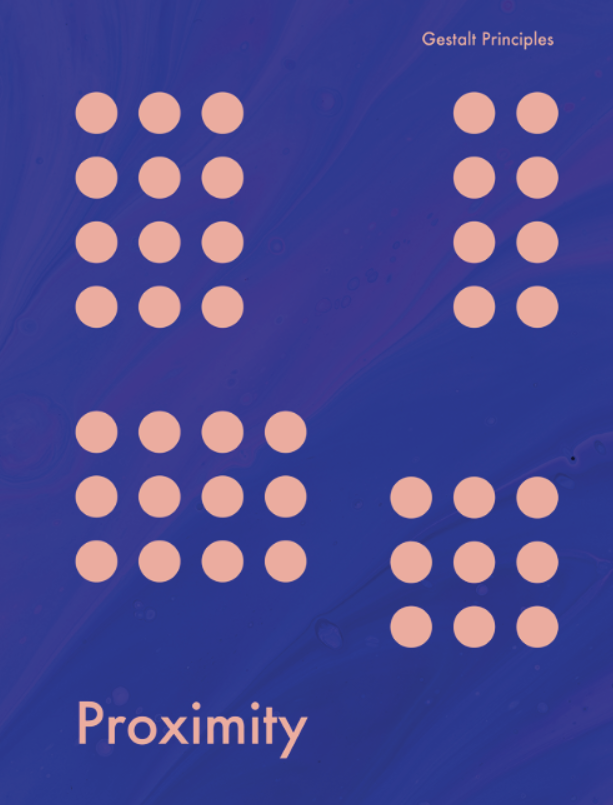
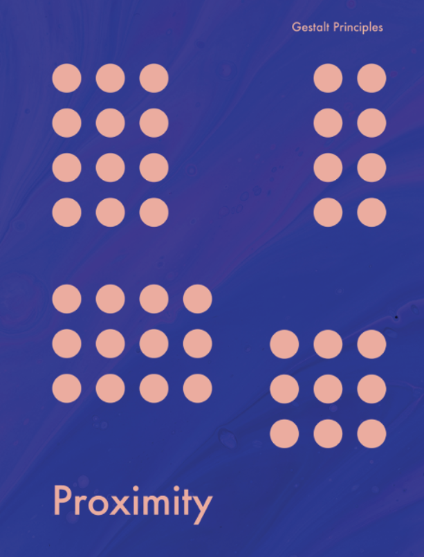
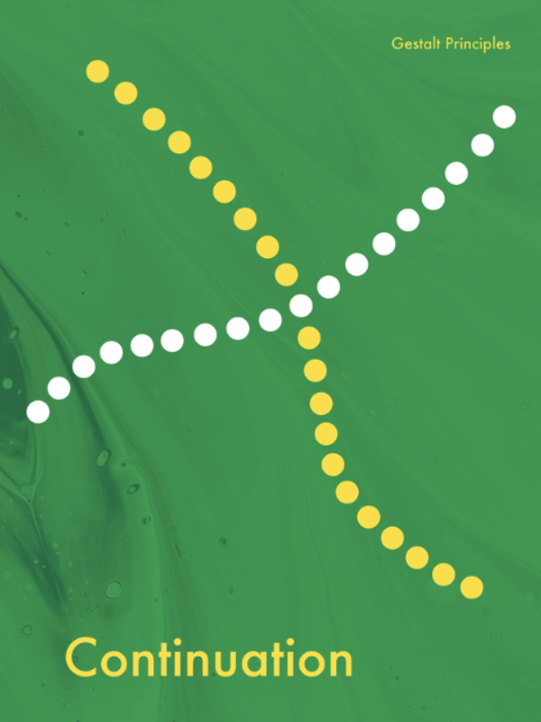
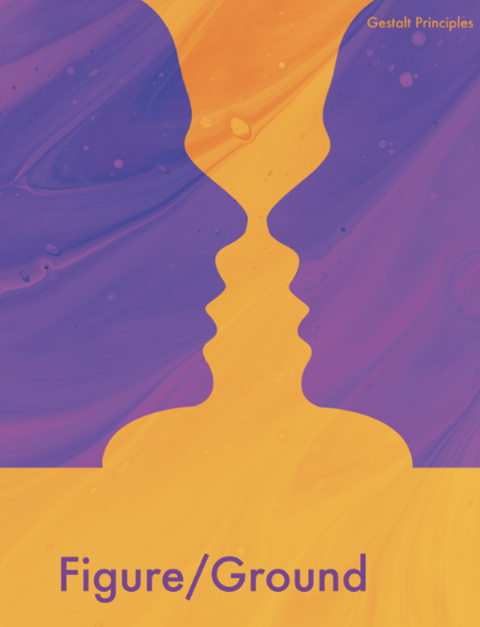
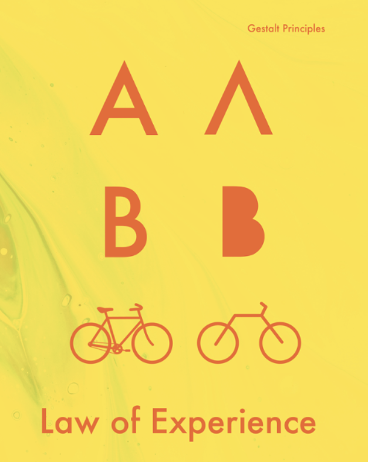

1. Proximidad
Los elementos que se encuentran cerca unos de otros tienden a ser percibidos como una única unidad o grupo, incluso si son diferentes en forma o color.

El término Gestalt proviene del alemán y se traduce como “forma” o “configuración”. Representa cómo el cerebro organiza los datos sensoriales para crear una imagen coherente.
El corazón de la Gestalt se resume en su famoso axioma:
1. Proximidad
Los elementos que se encuentran cerca unos de otros tienden a ser percibidos como una única unidad o grupo, incluso si son diferentes en forma o color.
2. Semejanza
Los elementos que comparten características visuales (forma, color, tamaño, textura) tienden a ser agrupados automáticamente.
3. Continuidad
Los elementos que siguen un patrón o una dirección percibida tienden a agruparse juntos, priorizando las líneas fluidas sobre los cambios abruptos o quebrados.
4. Cierre
Ante una figura incompleta o un contorno no cerrado, el cerebro tiende a “cerrarla” automáticamente para crear una forma significativa y completa.
5. Figura–fondo
Establece que, al percibir un objeto, la conciencia siempre lo separa en dos elementos: la Figura, en donde se centra la atención. Y el Fondo, que se siente menos definido y se expande por detrás
6. Simetría y orden
El cerebro tiende a percibir las imágenes simétricas como un solo elemento cohesionado, incluso si los elementos están separados.
7. Experiencia
La percepción está influenciada y, a menudo, condicionada por la experiencia previa y la familiaridad. Percibimos lo que nos resulta más significativo o conocido.
8. Pregnancia (Prägnanz)
El término alemán Prägnanz se traduce como “pregnancia” o “buena forma”. Ante la ambigüedad, nuestro cerebro elige la interpretación más simple.